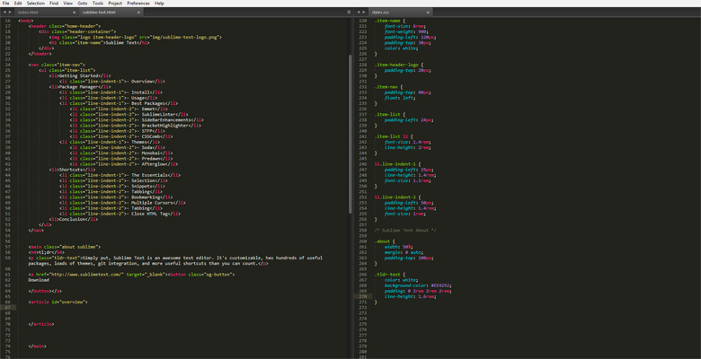
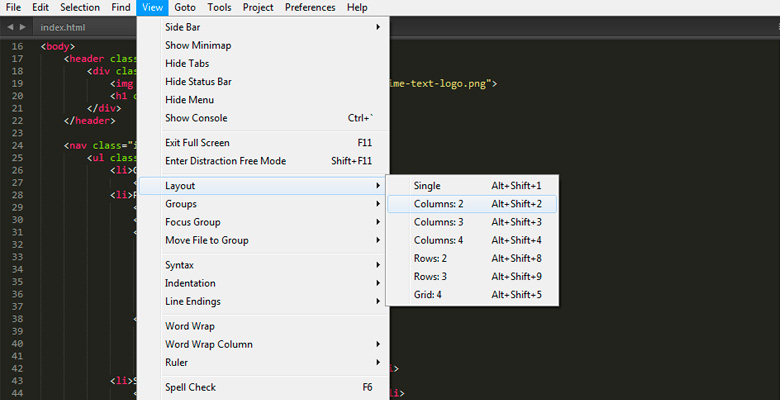

tl;dr
Simply put, Sublime Text is an awesome text editor. It's customizable, has hundreds of useful packages, loads of themes, git integration, and more useful shortcuts than you can count.
Simply put, Sublime Text is an awesome text editor. It's customizable, has hundreds of useful packages, loads of themes, git integration, and more useful shortcuts than you can count.
After you have it downloaded and installed, open up the program and take a look around. The first thing I do when I start a new website project is change the layout view to 2 columns..
In the menu, go to View -> Layout -> and select Columns: 2
I then put my .html file on the left and the .css file on the right. If you want to move a file from one column to the other simply drag the tab over to the new column. Using this 2 column layout allows beginners to see the relationship between their HTML elements and CSS styling.
A few other useful things I use that they have listed on their site are: Distraction Free Mode When you need to focus, Distraction Free Mode is there to help you out. Distraction Free Mode is full screen, chrome free editing, with nothing but your text in the center of the screen. You can incrementally show elements of the UI, such as tabs and the find panel, as you need them. You can enter Distraction Free Mode using the View/Enter Distraction Free Mode menu. Instant Project Switch Projects in Sublime Text capture the full contents of the workspace, including modified and unsaved files. You can switch between projects in a manner similar to Goto Anything, and the switch is instant, with no save prompts - all your modifications will be restored next time the project is opened. I use projects for every site I make. It makes it easier to keep track of your files and allows you to start working on a different project quickly.
So what exactly is a package manager? I like to think of it as like extensions in Chrome or Firefox. There community made addons that add functionality and customization..and they're free! The most popular package manager is Will Bond's Package Control. At that site you can browse through the most popular packages and see what ones you like. You can also download themes there too. One of the most popular packages is Emmet. Simply put, Emmet is a quick way to write HTML/CSS using snippets. Check out Hong Kiat's run down. My other favorite packages that you should check out: Sublime Enhancements CSSComb Soda Theme BracketHighlighter SFTP Sass
My favorite part of Sublime Text is all of the useful shorcuts. There's a lot to learn, but they really make it a lot easier and are quite a time saver once they become second nature. I'll give you a few of my favorites: Bookmarking: Use Ctrl+F2 or CMD+F2 to set as many bookmarks as you want. Then use F2 and SHIFT+F2 to jump back and forth between them. I really like this and it comes in handy when your file becomes thousands of lines of code long. For example, I usually have my CSS Media Queries bookmarked so I can jump to them when I need to. Select an entire Line: Use Ctrl+L or CMD+L to select an entire line. This allows you to move/delete lines easily. Find all instances: Say you have a CSS class name that is used 12 times throughout your HTML files and you want to change it. Instead of going through one-by-one, or using a find and replace you can have the cursor on the name and simply press Ctrl+D or CMD+D to find every instance of it. You can then type in the new name and it will change all of them. Select an element's content: Need to replace all the text in a paragraph element? Press Shift+Ctrl+A or Shift+Cmd+A to select an element's entire content and then type in your new stuff. Toggle Sidebar Visiblity: Press Ctrl+K+B (note: not all at once, press ctrl, then k, then b) to open and close the sidebar. This is useful and a time saver to hide your sidebar since you don't need it open most of the time.